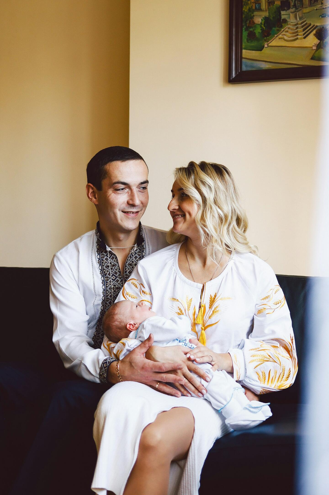
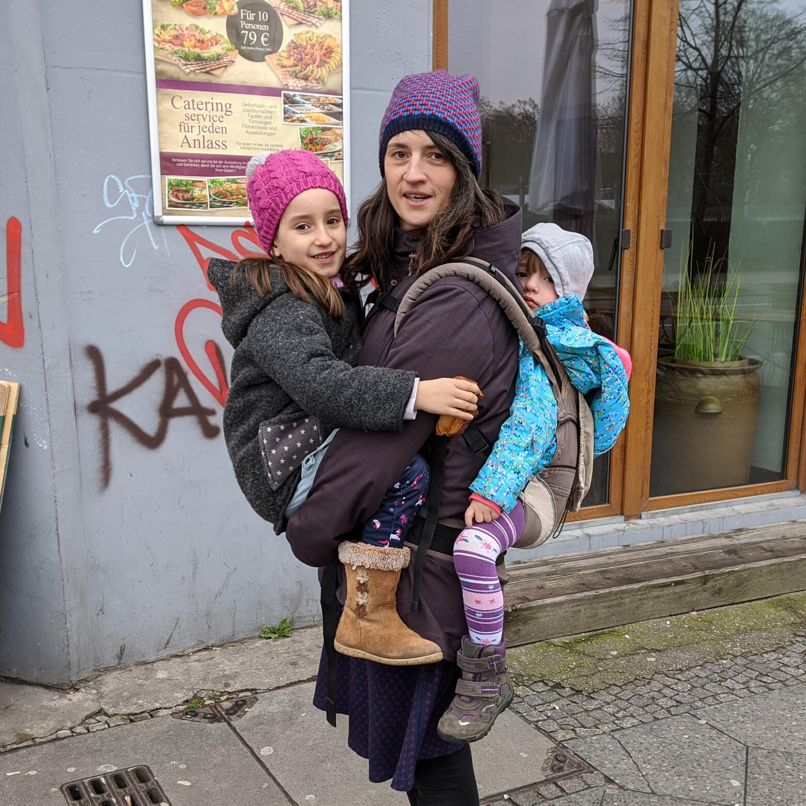

Nora Hammer
Sicher mit dir selbst und deinen Kindern
FAMILIENBEGLEITUNG IN BERLIN
Finde mehr Ruhe und Klarheit im Familienalltag
Ich unterstütze dich dabei, Herausforderungen im Alltag mit deinem Kind sowie im Zusammenleben als Familie besser zu verstehen und sicherer zu bewältigen. Im Mittelpunkt steht dabei das Verständnis – für dein Kind, für dich selbst und für eure Beziehung. Wenn wir beginnen, Bedürfnisse klarer wahrzunehmen und einzuordnen, entsteht mehr Sicherheit, Orientierung und Gelassenheit im Familienalltag.
ANGEBOTE
Wobei ich dich unterstützen kann
Gemeinsam finden wir Lösungen, die deinem Kind und dir mehr Ruhe im Alltag schenken.
Wenn dein Baby viel weint, schlecht schläft oder der Alltag dich an deine Grenzen bringt.
Hier geht es um Regulation, Entlastung und Orientierung in belastenden Situationen. Mehr erfahren
Wenn du dein Baby besser verstehen und ihm durch feinfühlige Berührung Sicherheit geben möchtest.
Hier geht es um Babykommunikation, Bindung und die Schmetterlingsmassage nach Eva Reich. Mehr erfahren

Wenn ihr als Elternpaar merkt, dass Kommunikation, Rollen oder Belastung eure Beziehung herausfordern.
Hier geht es um eure Beziehung als Paar im Übergang zur Elternschaft. Mehr erfahren

ÜBER MICH
Seit 2018 begleite ich junge Familien
Ich bin Mutter von zwei Kindern und begleite seit vielen Jahren Eltern und Kinder in den frühen Lebensjahren. Seit 2018 leite ich freiberuflich Kurse in Berliner Familienzentren.
15 Minuten
KOSTENLOS AM TELEFON
Brauchst du Hilfe bei den Herausforderungen im Alltag?
Im kostenlosen Erstgespräch finden wir gemeinsam heraus, welches Angebot zu dir passt.
Alle Formate und Preise findest du unter Angebote und Preise.
ANGEBOT
Krisenbegleitung
Wenn dein Baby viel weint, schlecht schläft oder der Alltag dich an deine Grenzen bringt, bist du nicht allein. In der Krisenbegleitung geht es um Regulation, Entlastung und Orientierung in belastenden Situationen.
Das kennst du vielleicht
Viele Eltern erleben in den ersten Monaten Phasen, in denen nichts mehr zu helfen scheint. Das ist kein Zeichen dafür, dass du etwas falsch machst.
Viel Weinen
Dein Baby lässt sich kaum beruhigen, obwohl du alles versuchst.
Wenig Schlaf
Einschlafen und Durchschlafen kosten euch jeden Tag viel Kraft.
Erschöpfung
Du bist müde und hast das Gefühl, nichts mehr richtig zu machen.
So arbeite ich
Wir schauen gemeinsam auf eure Situation und suchen nach möglichen Ursachen für das Verhalten deines Babys. Daraus entwickeln wir Wege, um Stress abzubauen und Ruhe in euren Alltag zu bringen.
Ich arbeite mit der Emotionellen Ersten Hilfe. Dabei stärken wir zuerst deine eigene Ruhe, denn ein ruhiges Elternteil hilft auch dem Baby, sich zu beruhigen.
Was du mitnimmst
Du gewinnst ein besseres Verständnis dafür, warum dein Baby weint und was es dir mit seinem Verhalten zeigen möchte. Gemeinsam entwickeln wir Wege, wie du dich selbst und dein Baby in belastenden Momenten besser beruhigen kannst. Kleine Routinen geben euch im Alltag Halt und Orientierung. Gleichzeitig stärkst du das Vertrauen in deine eigenen Fähigkeiten und findest mehr Sicherheit im Umgang mit deinem Kind.
Format und Preis
FORMAT
Hausbesuch oder online
DAUER
60 oder 90 Minuten
PREIS PRO SITZUNG
80 € für 60 Minuten
120 € für 90 Minuten
Die Krisenbegleitung ersetzt keine ärztliche Untersuchung. Wenn du dir Sorgen um die Gesundheit deines Babys machst, wende dich bitte zuerst an deine Kinderärztin oder deinen Kinderarzt.
Alle Angebote im Überblick findest du unter Angebote und Preise.
ANGEBOT
Berührung und Bindung
Körperkontakt ist eine der ersten Sprachen zwischen dir und deinem Baby. Ich begleite dich dabei, dein Baby besser zu verstehen und ihm durch feinfühlige Berührung Sicherheit zu geben.
„Bindung entsteht durch Berührung und durch Achtsamkeit.“
In den ersten Lebensmonaten braucht dein Baby vor allem deine liebevolle Nähe. Babykommunikation, die Schmetterlingsmassage nach Eva Reich und das Konzept Bindung durch Berührung helfen dir, eine starke Verbindung zu deinem Baby aufzubauen.
Dein Baby verstehen
Dein Baby zeigt dir von Anfang an, was es braucht: mit seiner Körpersprache, seiner Mimik und kleinen Bewegungen. Gemeinsam beobachten wir diese Signale, damit du erkennst, wann dein Kind offen für Kontakt ist und wann es eine Pause braucht.
Dabei schauen wir auch auf dich und darauf, wie ihr aufeinander reagiert. So wirst du Schritt für Schritt sicherer im Umgang mit deinem Baby.
Die Schmetterlingsmassage nach Eva Reich
Mit schmetterlingsleichten, sanften Streichungen begleitest du dein Baby körperlich und emotional. Dabei lernst du, seine Körpersprache zu lesen:
Wann ist es offen und neugierig?
Wann zeigt es Stress, Müdigkeit oder Überforderung?
Wann braucht es Nähe oder Rückzug?
Jedes Baby reagiert anders auf Berührung. Gemeinsam finden wir heraus, welche Berührung deinem Baby gerade Geborgenheit schenkt.
Was dich außerdem erwartet
Innere Ruhe für dich
Mit einfachen Atem- und Wahrnehmungsübungen bleibst du bei dir, auch wenn dein Baby unruhig ist oder weint.
Starke Gefühle begleiten
Manche Babys zeigen bei der Berührung starke Gefühle. Du lernst, dein Baby liebevoll durch diese Momente zu begleiten.
Übungen für den Alltag
Kleine Rituale geben euch auch außerhalb der Massage Halt, Ruhe und Vertrauen.
Für wen dieses Angebot ist
Eltern von Neugeborenen und jungen Säuglingen
Familien nach einer herausfordernden Schwangerschaft oder Geburt
Eltern von unruhigen, häufig weinenden Babys
Alle, die ihr Baby besser verstehen möchten
Ziele der Begleitung
Eine stärkere Bindung zwischen dir und deinem Baby
Mehr Sicherheit im Umgang mit seinen Signalen
Mehr Ruhe und Stabilität für dich
Entspannung und Wohlbefinden für dein Baby
Format und Preis
FORMAT
Hausbesuch oder online
DAUER
90 Minuten
PREIS PRO SITZUNG
90 €
Seit 2018 gebe ich Fabel®- und Babymassagekurse in verschiedenen Berliner Familienzentren, unter anderem im Pestalozzi-Fröbel-Haus in Kreuzberg, im Juli in Friedrichshain, im Zwergenland in Prenzlauer Berg, bei Family Performance in Friedrichshain und im Hug & Grow in Moabit. Im Pestalozzi-Fröbel-Haus leite ich auch heute noch Kurse.
Alle Angebote im Überblick findest du unter Angebote und Preise.
ANGEBOT
Paarberatung
Mit einem Baby verändert sich nicht nur euer Alltag, sondern auch eure Beziehung. In der Paarberatung geht es um euch als Paar im Übergang zur Elternschaft.
Das kennt ihr vielleicht
Ein Baby stellt vieles auf den Kopf. Viele Paare merken erst nach der Geburt, wie sehr sich ihre Beziehung verändert.
Mehr Streit
Ihr streitet häufiger als früher, oft über Kleinigkeiten.
Ungleiche Aufgaben
Die Arbeit rund um Baby und Haushalt fühlt sich ungerecht verteilt an.
Kaum Zeit füreinander
Für Gespräche als Paar bleibt kaum noch Zeit und Kraft.
So arbeite ich
In der Paarberatung nehmt ihr beide teil. Zuerst schauen wir, was euch gerade belastet und was ihr euch füreinander wünscht. Jeder von euch bekommt Raum, seine Sicht zu schildern, ohne dass es um Schuld geht.
Gemeinsam schauen wir auf eure Kommunikation, auf eure Rollen als Eltern und auf die Belastung im Alltag. Wir suchen nach konkreten Absprachen, die im Alltag mit Baby funktionieren.
Was ihr mitnehmt
Ihr entwickelt ein besseres Verständnis für die Sichtweise des anderen und lernt, auch in stressigen Momenten miteinander im Gespräch zu bleiben. Gemeinsam erarbeitet ihr klare Absprachen zu Aufgaben und Verantwortung im Familienalltag. So entsteht mehr Orientierung im Miteinander und wieder mehr Raum für euch als Paar.
Format und Preis
FORMAT
Hausbesuch oder online
DAUER
90 Minuten
PREIS PRO SITZUNG FÜR EUCH BEIDE
135 €
Alle Angebote im Überblick findest du unter Angebote und Preise.
METHODE
Emotionelle Erste Hilfe
Die Emotionelle Erste Hilfe (EEH) ist ein bindungsorientierter Ansatz. Sie hilft Eltern und Babys in Krisen, wieder zu mehr Ruhe und Verbindung zu finden.
„Es gibt kaum eine größere Belastung für Eltern, als über Tage und Wochen hinweg dem Schreien eines Säuglings ausgesetzt zu sein.“
Erschöpfung, Verzweiflung und Hilflosigkeit sind in dieser Situation normal. Sie sind kein Zeichen dafür, dass du etwas falsch machst.
Was ist Emotionelle Erste Hilfe?
Die EEH wurde von dem Psychologen Thomas Harms in Bremen entwickelt. Im Mittelpunkt steht die Beziehung zwischen Eltern und Kind und die Frage, wie beide wieder zu mehr Ruhe und Verbindung finden.
Ein Baby kann sich leichter beruhigen, wenn die Eltern selbst ruhiger werden. Deshalb arbeiten wir zuerst mit dir, mit deinem Atem, deiner Körperwahrnehmung und deiner inneren Stabilität. Von dort aus begleiten wir dein Baby.
Wobei EEH hilft
Untröstliches Weinen
Dein Baby weint viel und lässt sich auch durch Tragen, Schaukeln oder Stillen kaum beruhigen.
Schwierige Geburt
Dein Baby hat eine überwältigende oder stressreiche Geburt erlebt und kommt schwer zur Ruhe.
Erschöpfte Eltern
Du bist dauerhaft müde, fühlst dich hilflos und weißt nicht mehr weiter.
Warum frühe Hilfe wichtig ist
Wochenlanges Schreien kann Eltern an ihre Grenzen bringen. Erschöpfung und Hilflosigkeit verstärken sich dann oft gegenseitig. Die Emotionelle Erste Hilfe hilft, diesen Kreislauf früh zu unterbrechen.
Wenn du merkst, dass du gerade gar nicht mehr kannst: Lege dein Baby an einen sicheren Ort, verlasse kurz den Raum und hole dir Unterstützung.
Meine Qualifikation
Ich bin Fachberaterin für Emotionelle Erste Hilfe und befinde mich in der Ausbildung zur EEH-Therapeutin. In der Krisenbegleitung arbeite ich mit diesem Ansatz.
ÜBERSICHT
Angebote und Preise
Hier findest du alle Angebote auf einen Blick. Wenn du unsicher bist, was zu dir passt, lass uns in einem kostenlosen Erstgespräch darüber sprechen.
Krisenbegleitung
ab 80 €
pro Sitzung, je nach Dauer
60 Minuten: 80 €
90 Minuten: 120 €
Hausbesuch oder online
Berührung und Bindung
90 €
pro Sitzung, 90 Minuten
Hausbesuch oder online
inklusive Babykommunikation und Schmetterlingsmassage
KOSTENLOS · 15 MINUTEN AM TELEFON
Kostenloses Erstgespräch
Du erzählst mir kurz, worum es geht. Gemeinsam überlegen wir, welches Angebot passt und wie viele Termine sinnvoll sein könnten.
Gut zu wissen
Ablauf
Nach deiner Anfrage melde ich mich bei dir und wir vereinbaren einen Termin. Es gibt keine Pakete: Wir vereinbaren so viele Termine wie nötig, nicht so viele wie möglich.
Hausbesuche und Fahrtkosten
Ich komme gern zu euch nach Hause. Bei einer Anfahrt von mehr als 30 Minuten berechne ich eine Fahrtkostenpauschale von 25 €. Je nach Fahrtzeit sprechen wir den Betrag individuell ab.
Bezahlung
Du erhältst nach jeder Sitzung eine Rechnung und kannst per Überweisung bezahlen. Beim Hausbesuch ist auch Barzahlung möglich.
Absage von Terminen
Bitte sage Termine spätestens 24 Stunden vorher ab. Bei einer späteren Absage berechne ich 50 % des Honorars.
Kostenübernahme
Die Kosten werden in der Regel nicht von der Krankenkasse übernommen. Zuschüsse, zum Beispiel über Jugendämter oder die Frühen Hilfen, sind leider nicht möglich.
Noch Fragen?
Melde dich über die Kontaktseite oder ruf mich an: +49 160 811 71 66.
Über mich
Ich bin Mutter von zwei Kindern und begleite seit vielen Jahren Eltern und Kinder in den frühen Lebensjahren. Seit 2018 leite ich freiberuflich Kurse in Berliner Familienzentren und schaffe dort eine vertrauensvolle und unterstützende Atmosphäre, in der Eltern und Kinder miteinander wachsen und voneinander lernen können. Zu meinen Schwerpunkten zählen Babymassage- und Fabel®-Kurse sowie individuelle Beratungen zu häufigem Weinen, Regulationsschwierigkeiten, Unsicherheiten im Familienalltag und anderen Herausforderungen der frühen Familienzeit.
Als zertifizierte GfG-Familienbegleiterin, Fachberaterin für Emotionelle Erste Hilfe (EEH) und angehende EEH-Therapeutin begleite ich Familien in herausfordernden und belastenden Situationen mit besonderem Augenmerk auf die Stärkung von Bindung, Selbstregulation und elterlichen Kompetenzen. Dabei ist mir wichtig, Eltern darin zu unterstützen, die Bedürfnisse ihrer Kinder wahrzunehmen und auf ihre eigenen Fähigkeiten und Ressourcen zu vertrauen.
Meine Arbeit ist geprägt von Empathie, Achtsamkeit und einem ressourcenorientierten Ansatz. Ich möchte Familien einen geschützten Raum bieten, in dem sie Sicherheit, Vertrauen und neue Wege im Miteinander entwickeln können.
Möchtest du mehr erfahren? Ich freue mich darauf, von dir zu hören!
Dein erster Schritt zu mehr Leichtigkeit
Du möchtest einen Termin für eine Beratung buchen? Schreib mir eine E-Mail oder eine Nachricht über WhatsApp oder ruf mich an. Gemeinsam finden wir heraus, wie ich dich und deine Familie dabei unterstützen kann, mehr Ruhe und Klarheit in euren Alltag zu bringen. Ich melde mich in der Regel innerhalb von zwei Werktagen bei dir.
TELEFON
E-MAIL
WHATSAPP
Impressum
Angaben gemäß § 5 DDGNora Hammer
Familienbegleiterin (GfG) und Fachberaterin für Emotionelle Erste Hilfe
Alt-Stralau 5
10245 BerlinKontaktE-Mail: norahammer.berlin@gmail.com
Telefon: +49 160 811 71 66Verantwortlich für den Inhalt nach § 18 Abs. 2 MStVNora Hammer, Anschrift wie oben
Datenschutzerklärung
Datenschutz auf einen BlickAllgemeine HinweiseDie folgenden Hinweise geben einen einfachen Überblick darüber, was mit Ihren personenbezogenen Daten passiert, wenn Sie diese Website besuchen. Personenbezogene Daten sind alle Daten, mit denen Sie persönlich identifiziert werden können. Ausführliche Informationen zum Thema Datenschutz entnehmen Sie unserer unter diesem Text aufgeführten Datenschutzerklärung.Datenerfassung auf dieser WebsiteWer ist verantwortlich für die Datenerfassung auf dieser Website?Die Datenverarbeitung auf dieser Website erfolgt durch den Websitebetreiber. Dessen Kontaktdaten können Sie dem Abschnitt „Hinweis zur Verantwortlichen Stelle“ in dieser Datenschutzerklärung entnehmen.Wie erfassen wir Ihre Daten?Ihre Daten werden zum einen dadurch erhoben, dass Sie uns diese mitteilen. Hierbei kann es sich z. B. um Daten handeln, die Sie uns per E-Mail, WhatsApp oder Telefon mitteilen. Andere Daten werden automatisch oder nach Ihrer Einwilligung beim Besuch der Website durch unsere IT-Systeme erfasst. Das sind vor allem technische Daten (z. B. Internetbrowser, Betriebssystem oder Uhrzeit des Seitenaufrufs). Die Erfassung dieser Daten erfolgt automatisch, sobald Sie diese Website betreten.Wofür nutzen wir Ihre Daten?Ein Teil der Daten wird erhoben, um eine fehlerfreie Bereitstellung der Website zu gewährleisten. Andere Daten können zur Analyse Ihres Nutzerverhaltens verwendet werden. Sofern über die Website Verträge geschlossen oder angebahnt werden können, werden die übermittelten Daten auch für Vertragsangebote, Bestellungen oder sonstige Auftragsanfragen verarbeitet.Welche Rechte haben Sie bezüglich Ihrer Daten?Sie haben jederzeit das Recht, unentgeltlich Auskunft über Herkunft, Empfänger und Zweck Ihrer gespeicherten personenbezogenen Daten zu erhalten. Sie haben außerdem ein Recht, die Berichtigung oder Löschung dieser Daten zu verlangen. Wenn Sie eine Einwilligung zur Datenverarbeitung erteilt haben, können Sie diese Einwilligung jederzeit für die Zukunft widerrufen. Außerdem haben Sie das Recht, unter bestimmten Umständen die Einschränkung der Verarbeitung Ihrer personenbezogenen Daten zu verlangen. Des Weiteren steht Ihnen ein Beschwerderecht bei der zuständigen Aufsichtsbehörde zu.Hierzu sowie zu weiteren Fragen zum Thema Datenschutz können Sie sich jederzeit an uns wenden.HostingExternes HostingDiese Website wird extern gehostet. Die personenbezogenen Daten, die auf dieser Website erfasst werden, werden auf den Servern des Hosters / der Hoster gespeichert. Hierbei kann es sich v. a. um IP-Adressen, Kontaktanfragen, Meta- und Kommunikationsdaten, Vertragsdaten, Kontaktdaten, Namen, Websitezugriffe und sonstige Daten, die über eine Website generiert werden, handeln.Das externe Hosting erfolgt zum Zwecke der Vertragserfüllung gegenüber unseren potenziellen und bestehenden Kunden (Art. 6 Abs. 1 lit. b DSGVO) und im Interesse einer sicheren, schnellen und effizienten Bereitstellung unseres Online-Angebots durch einen professionellen Anbieter (Art. 6 Abs. 1 lit. f DSGVO). Sofern eine entsprechende Einwilligung abgefragt wurde, erfolgt die Verarbeitung ausschließlich auf Grundlage von Art. 6 Abs. 1 lit. a DSGVO und § 25 Abs. 1 TDDDG, soweit die Einwilligung die Speicherung von Cookies oder den Zugriff auf Informationen im Endgerät des Nutzers (z. B. Device-Fingerprinting) im Sinne des TDDDG umfasst. Die Einwilligung ist jederzeit widerrufbar.Unser Hoster wird bzw. werden Ihre Daten nur insoweit verarbeiten, wie dies zur Erfüllung seiner Leistungspflichten erforderlich ist und unsere Weisungen in Bezug auf diese Daten befolgen. Wir setzen folgenden Hoster ein:GitHub Inc. (GitHub Pages)
88 Colin P. Kelly Jr. Street
San Francisco, CA 94107
USAAllgemeine Hinweise und PflichtinformationenDatenschutzDie Betreiber dieser Seiten nehmen den Schutz Ihrer persönlichen Daten sehr ernst. Wir behandeln Ihre personenbezogenen Daten vertraulich und entsprechend den gesetzlichen Datenschutzvorschriften sowie dieser Datenschutzerklärung.Wenn Sie diese Website benutzen, werden verschiedene personenbezogene Daten erhoben. Personenbezogene Daten sind Daten, mit denen Sie persönlich identifiziert werden können. Die vorliegende Datenschutzerklärung erläutert, welche Daten wir erheben und wofür wir sie nutzen. Sie erläutert auch, wie und zu welchem Zweck das geschieht.Wir weisen darauf hin, dass die Datenübertragung im Internet (z. B. bei der Kommunikation per E-Mail) Sicherheitslücken aufweisen kann. Ein lückenloser Schutz der Daten vor dem Zugriff durch Dritte ist nicht möglich.Hinweis zur verantwortlichen StelleDie verantwortliche Stelle für die Datenverarbeitung auf dieser Website ist:Nora Hammer
Alt-Stralau 5
10245 Berlinnorahammer.berlin@gmail.comVerantwortliche Stelle ist die natürliche oder juristische Person, die allein oder gemeinsam mit anderen über die Zwecke und Mittel der Verarbeitung von personenbezogenen Daten (z. B. Namen, E-Mail-Adressen o. Ä.) entscheidet.SSL- bzw. TLS-VerschlüsselungDiese Seite nutzt aus Sicherheitsgründen und zum Schutz der Übertragung vertraulicher Inhalte, wie zum Beispiel Bestellungen oder Anfragen, die Sie an uns als Seitenbetreiber senden, eine SSL- bzw. TLSVerschlüsselung. Eine verschlüsselte Verbindung erkennen Sie daran, dass die Adresszeile des Browsers von „http://“ auf „https://“ wechselt und an dem Schloss-Symbol in Ihrer Browserzeile.Wenn die SSL- bzw. TLS-Verschlüsselung aktiviert ist, können die Daten, die Sie an uns übermitteln, nicht von Dritten mitgelesen werden.Datenerfassung auf dieser WebsiteAnfrage per E-Mail, Telefon oder WhatsAppWenn Sie uns per E-Mail, Telefon oder WhatsApp kontaktieren, wird Ihre Anfrage inklusive aller daraus hervorgehenden personenbezogenen Daten (Name, Anfrage) zum Zwecke der Bearbeitung Ihres Anliegens bei uns gespeichert und verarbeitet. Diese Daten geben wir nicht ohne Ihre Einwilligung weiter.Die Verarbeitung dieser Daten erfolgt auf Grundlage von Art. 6 Abs. 1 lit. b DSGVO, sofern Ihre Anfrage mit der Erfüllung eines Vertrags zusammenhängt oder zur Durchführung vorvertraglicher Maßnahmen erforderlich ist. In allen übrigen Fällen beruht die Verarbeitung auf unserem berechtigten Interesse an der effektiven Bearbeitung der an uns gerichteten Anfragen (Art. 6 Abs. 1 lit. f DSGVO) oder auf Ihrer Einwilligung (Art. 6 Abs. 1 lit. a DSGVO) sofern diese abgefragt wurde; die Einwilligung ist jederzeit widerrufbar.Die von Ihnen an uns per Kontaktanfrage übersandten Daten verbleiben bei uns, bis Sie uns zur Löschung auffordern, Ihre Einwilligung zur Speicherung widerrufen oder der Zweck für die Datenspeicherung entfällt (z. B. nach abgeschlossener Bearbeitung Ihres Anliegens). Zwingende gesetzliche Bestimmungen – insbesondere gesetzliche Aufbewahrungsfristen – bleiben unberührt.Bei einer Kontaktaufnahme über WhatsApp erfolgt die Kommunikation über den Dienst WhatsApp, der für Nutzer in Europa von WhatsApp Ireland Limited, Irland, betrieben wird. Dabei können insbesondere Ihre Telefonnummer sowie Metadaten der Kommunikation durch WhatsApp verarbeitet werden. Die Inhalte der Nachrichten sind Ende-zu-Ende-verschlüsselt. Die Nutzung von WhatsApp ist freiwillig; Sie können uns alternativ jederzeit per E-Mail oder Telefon erreichen. Weitere Informationen finden Sie in der Datenschutzrichtlinie von WhatsApp: https://www.whatsapp.com/legal/privacy-policy-eea.Quelle: https://www.e-recht24.de